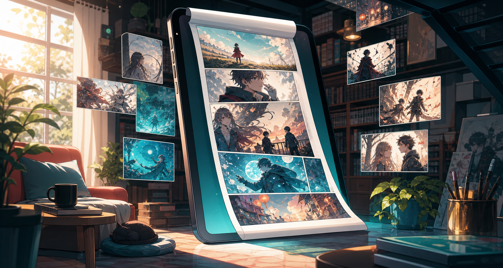

Obras oficiais
Este site e dedicado somente as minhas obras originais, publicadas por mim para leitura livre.

Biblioteca oficial gratuita
Leia minhas obras originais em um espaco feito para acompanhar capitulos, explorar series e baixar arquivos para leitura offline.
Obras
Atualizacoes
Downloads
Sobre o KapiTomo
Este site e dedicado somente as minhas obras originais, publicadas por mim para leitura livre.
Voce pode ler online quando quiser, acompanhar os capitulos recentes e voltar para continuar depois.
Os arquivos disponiveis para download sao liberados para consumo pessoal e leitura offline.
Capitulos